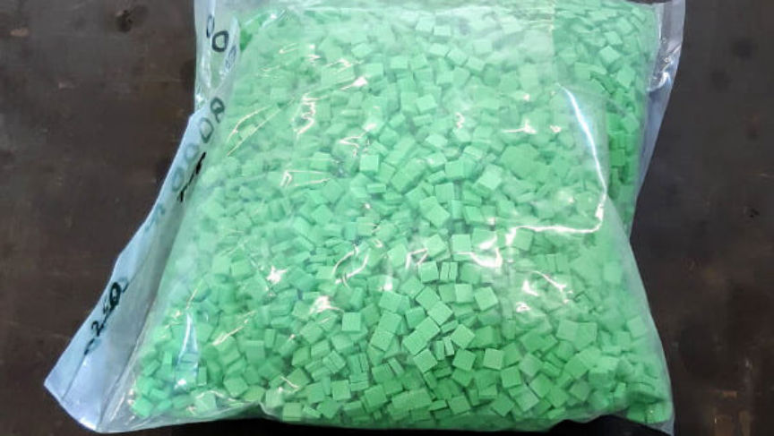
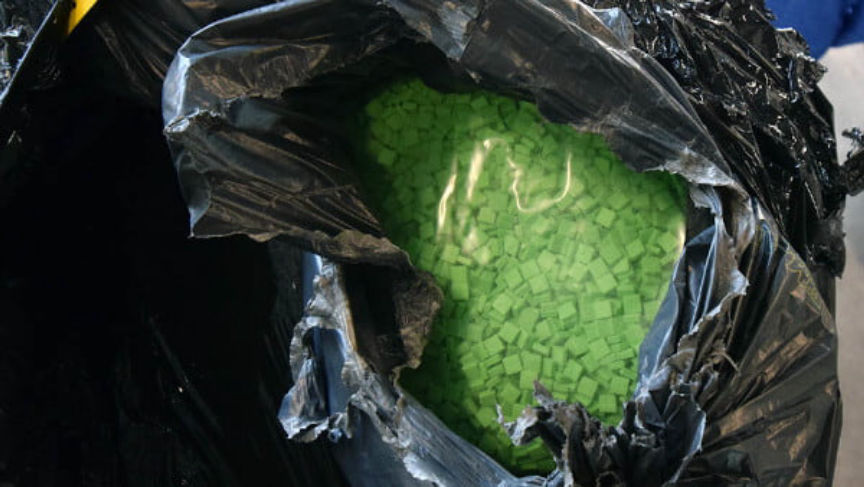
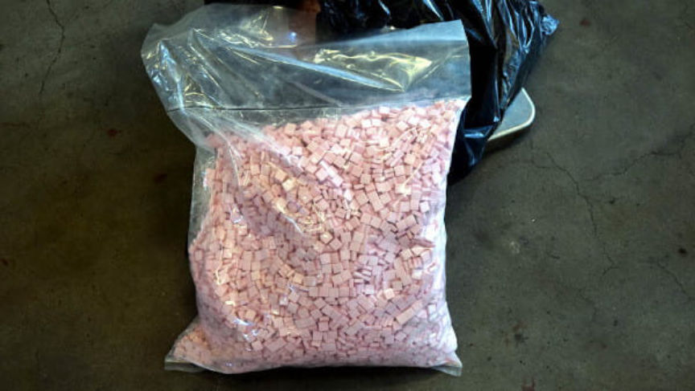
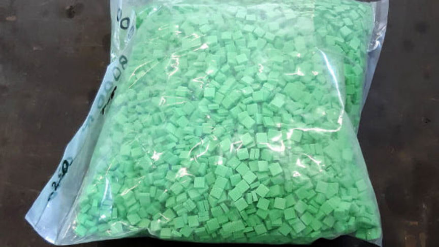
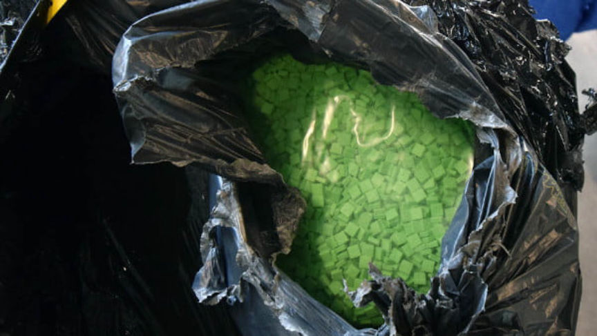
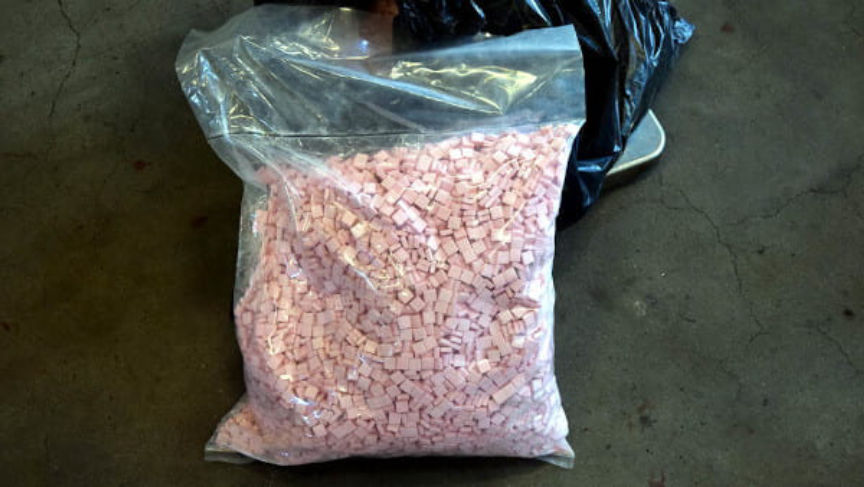

400,000 Ecstasy Pills Seized in Netherlands Darkweb Investigation
~2 min read | Published on 2020-05-21, tagged Arrested, Darkweb-Vendor, Drug-Bust, Drugs using 322 words.
An investigation into a darkweb drug operation in the Netherlands led to the discovery of more than 400,000 ecstasy pills, according to an announcement from the Public Prosecution Service.
Law enforcement in the Netherlands arrested three suspects as part of an investigation into drug trafficking via darkweb marketplaces. The suspects, a father (59) and son (30) from Spijkenisse as well as a 33-year-old man from Rotterdam, have been accused of participating in a drug trafficking operation with co-conspirators in at least two countries.

The investigation built off evidence obtained earlier this year during an initial investigation into cross-border drug trafficking between the Netherlands and Germany. Law enforcement in Germany collaborated with Dutch authorities during the investigation, according to information revealed in the most recent announcement from the Public Prosecution Service.
Police arrested two men in February 2020 for participation in a drug trafficking network. One of the men, a 40-year-old man from Voorburg, allegedly organized the operation and handled business on the darkweb. The second, a 38-year-old man from Pijnacker, allegedly traveled–with packages of drugs–to Germany. Once in Germany, the 38-year-old would mail packages from different post offices to partially conceal the actual location of the conspirators.

During the investigation into the first two suspects, police in the Netherlands observed the 38-year-old routinely visited the 33-year-old man from Rotterdam. According to the announcements, the 38-year-old delivered packages of drugs to the 33-year-old.

The suspect in Rotterdam interacted with the father and son Spijkenisse on a regular basis as well. During the execution of search and arrest warrants on April 22, the police raided the warehouse of a company owned by the father and discovered more than 400,000 ecstasy pills and large amounts of cash. The company allegedly produced equipment for manufacturing the drugs distributed by the suspected drug traffickers.
All suspects are in police custody and the investigation is ongoing.
Law enforcement in the Netherlands arrested three suspects as part of an investigation into drug trafficking via darkweb marketplaces. The suspects, a father (59) and son (30) from Spijkenisse as well as a 33-year-old man from Rotterdam, have been accused of participating in a drug trafficking operation with co-conspirators in at least two countries.

Seized Ecstasy Pills | ©Openbaar Ministerie
The investigation built off evidence obtained earlier this year during an initial investigation into cross-border drug trafficking between the Netherlands and Germany. Law enforcement in Germany collaborated with Dutch authorities during the investigation, according to information revealed in the most recent announcement from the Public Prosecution Service.
Police arrested two men in February 2020 for participation in a drug trafficking network. One of the men, a 40-year-old man from Voorburg, allegedly organized the operation and handled business on the darkweb. The second, a 38-year-old man from Pijnacker, allegedly traveled–with packages of drugs–to Germany. Once in Germany, the 38-year-old would mail packages from different post offices to partially conceal the actual location of the conspirators.

More Seized Ecstasy Pills | ©Openbaar Ministerie
During the investigation into the first two suspects, police in the Netherlands observed the 38-year-old routinely visited the 33-year-old man from Rotterdam. According to the announcements, the 38-year-old delivered packages of drugs to the 33-year-old.

Even More Seized Ecstasy Pills | ©Openbaar Ministerie
The suspect in Rotterdam interacted with the father and son Spijkenisse on a regular basis as well. During the execution of search and arrest warrants on April 22, the police raided the warehouse of a company owned by the father and discovered more than 400,000 ecstasy pills and large amounts of cash. The company allegedly produced equipment for manufacturing the drugs distributed by the suspected drug traffickers.
All suspects are in police custody and the investigation is ongoing.